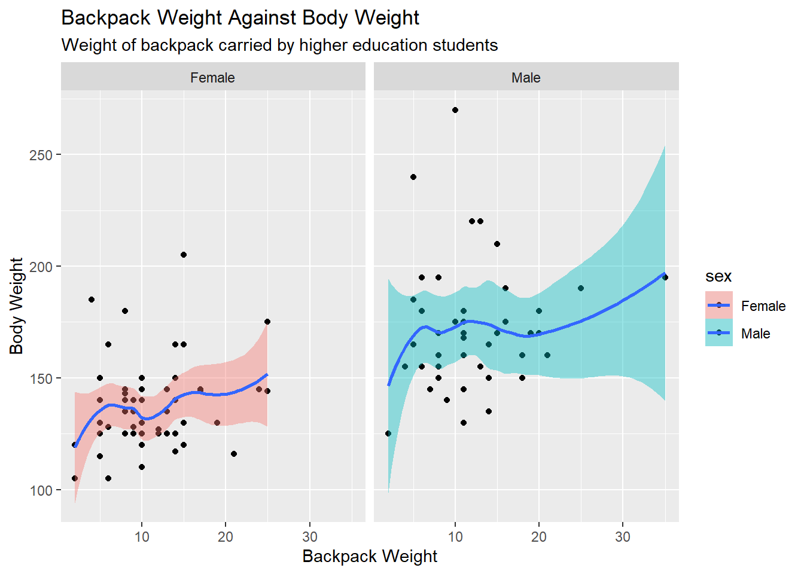

Introduction to `ggplot2` Homework
library(CodeClanData)
library(tidyverse)MVP
Question 1
Load in the libraries you need, and look at the backpack data. Take note of variable names and dimensions.
head(backpack)## backpack_weight body_weight ratio back_problems major year sex
## 1 9 125 0.0720000 1 Bio 3 Female
## 2 8 195 0.0410256 0 Philosophy 5 Male
## 3 10 120 0.0833333 1 GRC 4 Female
## 4 6 155 0.0387097 0 CSC 6 Male
## 5 8 180 0.0444444 0 EE 2 Female
## 6 5 240 0.0208333 0 History 0 Male
## status units
## 1 U 13
## 2 U 12
## 3 U 14
## 4 G 0
## 5 U 14
## 6 G 0Question 2
What is the distribution of backpack weights that students are carrying? Choose an appropriate graph to show the distribution.
backpack %>%
ggplot() +
geom_histogram() +
aes(
x = backpack_weight
) +
labs(
x = "Backpack Weight",
y = "Count",
title = "Backpack Weight",
subtitle = "Weight of backpack carried by higher education students"
)
The above histogram shows that the backpack weight follows an approximately normal distribution with a positive skew.
Question 3
Are there differences in backpack weight between sex?
backpack %>%
ggplot() +
geom_histogram() +
aes(
x = backpack_weight,
fill = sex
) +
labs(
x = "Backpack Weight",
y = "Count",
title = "Backpack Weight",
subtitle = "Weight of backpack carried by higher education students"
) +
facet_wrap(
~sex
)
Both sexes follow approximately the same distribution, but the data for female students is more clustered around the median value of 11.
Question 4
What is the relationship between body weight and backpack weight?
backpack %>%
ggplot() +
geom_point() +
geom_smooth() +
aes(
x = backpack_weight,
y = body_weight
) +
labs(
x = "Backpack Weight",
y = "Body Weight",
title = "Backpack Weight and Body Weight",
subtitle = "Weight of backpack carried by higher education students"
)
There appears to be no relationship between backpack weight and body weight. There is, at a stretch, a very weak positive correlation.
Question 5
Is this relationship different between men and women? Choose an appropriate plot and interpret your findings.
backpack %>%
ggplot() +
geom_point() +
geom_smooth() +
aes(
x = backpack_weight,
y = body_weight,
fill = sex
) +
labs(
x = "Backpack Weight",
y = "Body Weight",
title = "Backpack Weight Against Body Weight",
subtitle = "Weight of backpack carried by higher education students"
) +
facet_wrap(
~sex
)
The relationship appears to be the same when adjusted for sex, noting that one male student is exaggerating the correlation at the far end of the data.
Question 6
What proportion of students report back pain?
sum(backpack$back_problems) / length(backpack$back_problems) * 100## [1] 3232% of students report back pain.
Question 7
Is this proportion different between men and women?
backpack_problems_male <- backpack %>%
filter(
sex == "Male"
) %>%
select(
back_problems
) %>%
as_vector() %>%
as.logical()
backpack_problems_female <- backpack %>%
filter(
sex == "Female"
) %>%
select(
back_problems
) %>%
as_vector() %>%
as.logical()round(
sum(backpack_problems_male) / length(backpack_problems_male) * 100,
2
)## [1] 17.7817.78% of male students report back pain.
round(
sum(backpack_problems_female) / length(backpack_problems_female) * 100,
2
)## [1] 43.6443.64% of female students report back pain. This is a total difference of female students being 25.86% more likely to report back pain.
Question 8
Now you’ve investigated your data separately, create plots to describe the relationship between backpack weight, body weight, gender and reported backpain.
backpack %>%
ggplot() +
geom_point() +
geom_smooth(
aes(
fill = sex
),
show.legend = FALSE
) +
aes(
x = backpack_weight,
y = body_weight
) +
labs(
x = "Backpack Weight",
y = "Body Weight",
title = "Backpack Weight Against Body Weight",
subtitle = "Weight of backpack carried by higher education students"
) +
facet_grid(
~sex ~back_problems,
labeller = "label_both"
)
We see that the paucity of male students who have reported back problems has resulted in very few data points in the male with back problems plot. An outlier in the male plot is stretching the length of the plot, though it does not appear to have a notable effect on the data.